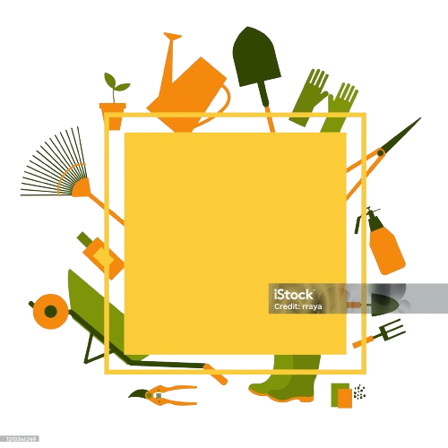

Delphine Larché
Formatrice – Consultante
Forme - Accompagne – Conseil
les acteurs de la formation et du paysage
Phylum Formation
Delphine Larché
Formatrice – Consultante
Présentation
Delphine Larché
Formatrice experte en Aménagement Paysager depuis 20 ans, j’accompagne l’humain dans son développement, son évolution et son projet de vie. Je conduis, guide et escorte les équipes pédagogiques et les formateurs novices en situation de travail, depuis une dizaine d’année, à travers leurs postures et gestes professionnels.
Formatrice de Formateurs, d’Enseignants et de Cadres Pédagogiques (intervention en didactique professionnelle ce titre Bac +5 de Formateur de formateurs)
Membre de Jury pour le Titre Professionnel de Formateur Professionnel d’Adultes (pour les sessions d’examen afin de valider les parcours des apprenants) et pour le Titre de Formateurs, d’Enseignants et de Cadres Pédagogiques (validation bloc de compétence "Conseil et Accompagnement d ’Équipe et d’Organisation« )
Conçois, anime et évalue les séquences de formation avec une pédagogie pratique, ludique et active pour les apprenants
Démarche par l’analyse des pratiques professionnelles. Approche réflexive créant un lieu de partage, d’échange et d’écoute permettant d’apporter de solutions aux problèmes rencontrés
Prestations
Je propose des prestations et des interventions de formation, d’accompagnement et de conseil adaptées aux besoins de chacun et à leur exigences, pour les organismes de formation, les entreprises, les associations, les collectivités territoriales et les particuliers.
Formation de Formateurs
Former
dans l'action
Objectif : Définir le cadre institutionnel et partenarial de la formation
Modules de Formation
Modélisation de l’environnement de la formation (commanditaires,prescripteurs, financeurs…) et le contexte règlementaire
Durée : 2 à 4 jours
Objectif : Définir le cadre institutionnel et partenarial de la formation
Modules de Formation
Compréhension des méthodes, phases, modes et démarches pédagogiques
Durée : 3 à 5 jours
Analyse et conception d’une action ou séquence
Durée : 3 à 5 jours
Construction et utilisation des outils pédagogiques cohérent à la situation d’apprentissage
Durée : 5 à 7 jours
Construction et utilisation des outils pédagogiques cohérent à la situation d’apprentissage
Durée : 5 à 7 jours
Animation de séquences de formation en utilisant l’ensemble des démarches pédagogiques et en les analysant
Durée : 5 à 10 jours
Objectif : Maîtriser les différentes fonctions de l’évaluation et les mobiliser de façon pertinente
Modules de Formation
Les différentes techniques de l’évaluation
Durée : 2 à 3 jours
Évaluation ou coévaluation des apprenants, séquences et actions de formation
Durée : 2 à 3 jours
Accompagner
au changement
Objectif : Construire son identité professionnelle
Modules d'Accompagnement
Construction de son identité professionnelle (éthique, déontologie, postures et gestes professionnels)
Durée : 2 à 4 jours
Utilisation des soft skills en formation favorisant le changement et l’innovation
Durée : 2 à 4 jours
Objectif : Analyser sa démarche et pratique professionnelle
Modules d'Accompagnement
Clarification des mutualités coopératives et l’intelligence collective
Durée : 2 à 4 jours
Transformer des situations professionnelles en situation d’apprentissage
Durée : 3 à 5 jours
Construction et actualisation de méthodes et outils (portefolio, IPF…)
Durée : 5 à 10 jours
Développement de ses soft skills (compétences professionnelles douces)
Durée : 2 à 4 jours
Analyse des pratiques professionnelles (théâtre forum, GAPP…)
Durée : 5 à 10 jours
Conseiller
par l'Innovation
Analyser les besoins du contexte
Proposer un diagnostique de la situation
Apporter des pistes de solution et d’amélioration
Durée : En fonction des besoins
Formations en Aménagement Paysager & Environnement
Former
dans l'action
Objectif : Sensibiliser les acteurs à une gestion écoresponsable des aménagements paysagers
Modules de Formation
Méthodes alternatives aux traitements chimiques
Durée : 2 jours
Tri sélectif des rémanents (déchets)
Durée : 1 jour
Utilisation raisonnée du matériel
Durée : 1 jour
Reconnaissance des végétaux méditerranéen et économe en eau
Durée : 3 à 5 jours
Respect de la sécurité et des règles professionnelles
Durée : 1 à 2 jours
Gestion de chantier dans le respect de l’environnement et de la sécurité
Durée : 3 à 5 jours
Communication interprofessionnelle
Durée : 2 à 5 jours
Objectif : Concevoir un jardin dans une démarche écologique
Modules de Formation
Fleurissement de petits espaces et massifs
Durée : 2 à 3 jours
Aménagement de petits espaces avec une végétation pérenne
Durée : 3 à 4 jours
Aménagement de bassins
Durée : 3 à 4 jours
Aménagement de jardins thématiques (économe en eau, thérapeutique, potager/verger…)
Durée : 3 à 4 jours
Objectif : Installer les composantes d’un aménagement avec une approche agroécologique dans le respect des règles professionnelles
Modules de Formation
Mise en place de la végétalisation (plantation, modes de fixations, enherbement par semis et plaquage)
Durée : 4 à 5 jours
Mise en place des infrastructures (circulations, dallages, pavages, terrasse bois, bassin…)
Durée : 5 à 10 jours
Objectif : Entretenir les espaces d’un aménagement paysager en utilisant les bonnes pratiques professionnelles
Modules de Formation
Taille raisonnée des végétaux d’ornement
Durée : 3 à 5 jours
Taille des oliviers
Durée : 3 à 5 jours
Optimiser les gestes liés à l’activité de la taille pour limiter les risques (TMS, choix des outils, affilage…)
Durée : 1 jour
Amélioration et protection des sols
Durée : 1 à 3 jours
Protection biologique intégrée: Lutter contre les agents pathogènes afin de maintenir le végétal en bonne santé
Durée : 3 à 5 jours
Maintenir en état les infrastructures d’une aménagement paysager dans la perspective de durabilité
Durée : 2 à 3 jours
Accompagner
au changement
Objectif : Mettre en place une démarche écoresponsable d’un aménagement paysager
Module d'Accompagnement
Gestion différenciée des sites
Durée : En fonction des besoins
Objectif : Conduire des projets écologiques en favorisant la biodiversité et les équilibres naturels d’un site
Modules d'Accompagnement
Jardin économe en eau
Durée : En fonction des besoins
Jardin de soins
Durée : En fonction des besoins
Jardin partagé
Durée : En fonction des besoins
Jardin des sens
Durée : En fonction des besoins
Jardin alimentaire (potager et verger)
Durée : En fonction des besoins
Objectif : Maintenir des continuités écologiques en favorisant la biodiversité et les équilibres naturels d’un site
Modules d'Accompagnement'
Entretien raisonné des différents espaces d’un aménagement
Durée : En fonction des besoins
Utilisation raisonnée du matériel
Durée : En fonction des besoins
Conseiller
par l'Innovation
Analyser les besoins du contexte
Proposer un diagnostique de la situation
Apporter des pistes de solution et d’amélioration
Durée : En fonction des besoins
Témoignages
Contactez-moi !
J’interviens toujours en intra, dans vos locaux ou lieux spécifique de votre choix